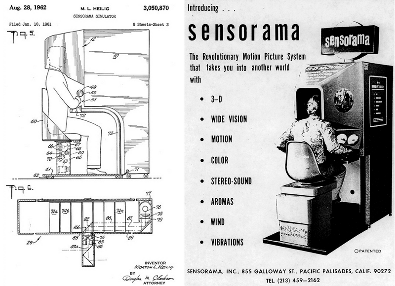

La réalité virtuelle est une technologie qui permet de plonger une personne dans un monde artificiel
créé numériquement. Il peut s'agir d'une reproduction du monde réel ou d'un monde totalement inventé.
Cette expérience de la RV est à la fois visuelle et auditive, et, dans certains cas, haptique grâce à la création d'un
retour d'effet (lorsque la personne est équipée des interfaces adéquates tels que des gants ou un vêtement,
elle peut éprouver certaines sensations physique liées à son environnement virtuel, comme par
exemple ressentir des coups, des impacts de balles etc ….)
La réalité virtuelle ne doit pas être confondue avec la réalité augmentée qui utilise l'environnement réel pour y afficher des informations 3D ou 2D, comme par exemple Pokemon go .
Il y a plusieurs décennies, le terme de réalité virtuelle a été inventé pour désigner le cinéma immersif créé par Morton HEILIG en 1962. C'était le Sensorama.
